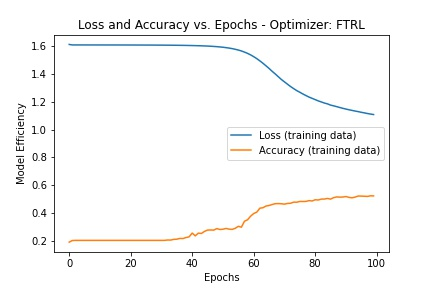
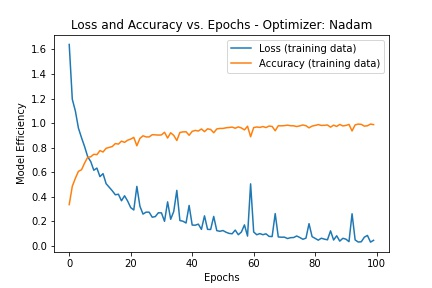
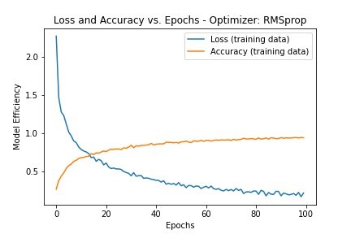
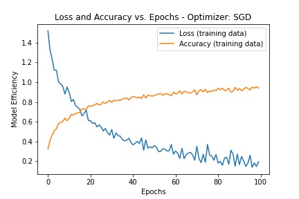
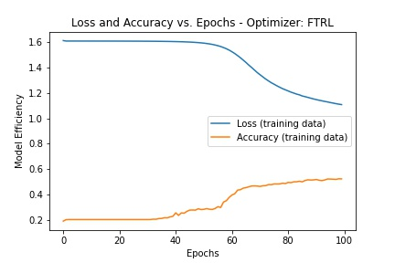
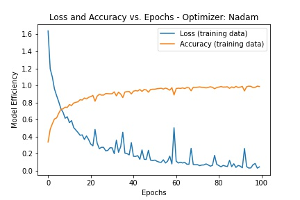
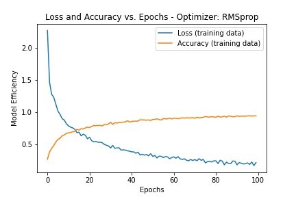
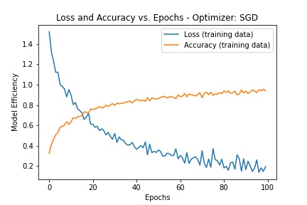

Introduction
Labeled datasets are ideal for use in supervised learning to train classifiers. Having toyed around with the MNIST dataset, we looked for and thankfully found a comparable dataset that could be subjected to supevised learning. With a dense neural network comprising of an input layer, 2 hidden layer with 100 nodes each, and an output layer, we compared 8 different optimizers in our sequential model and present our process and results.
Problem Statement
Build a sequential model to train classifiers to predict/identify one of five musical notes.
Methodology
Our project methodology is divided into the following four sections:.
- Data Sourcing.
- Data Preparation.
- Model Builiding.
- Model Evaluation.
Dataset Sourcing
Our project required a labeled dataset with all images equally sized. Our search for such a dataset led us to the Musical Notes Datasets below.

Music Notes Datasets
5000 images. 5 different categories/classes/labels each with 1000 images. The data structure is similar to MNIST. Image size 64*64 pixels.
Data Preparation
The card below explains the data preparation steps. Key code snippets are available in the accordion.
- Extract all images into 1 folder.
- Read in images as grayscale.
- Set image type a sfloat.
- Normalize to set the floats to between 0 (white) and 1 (black).
- Get image class name by taking only first character of the file name.
- Assign a unique number to each class.
- Examine the image array test a few images.
- Flatten the 64x64 pixels into a 1D array of 4096 rows.
- Reshape to a numpy array.
- Split data into training and testing sets.
# Code adapted from https://towardsdatascience.com # For simplicity, all files were copied out of their subdirectories into single "Images" folder. img_data_array=[] class_name=[] folder_name = "Images" forfile in os.listdir(os.path.join(folder_name)): counter +=1 image_path= os.path.join(folder_name, file) image= cv2.imread(image_path, cv2.IMREAD_GRAYSCALE) image = image.astype('float32') image /= 255 img_data_array.append(image) note_class = file[0:1] class_name.append(note_class) # Assigning a unique number to each class note_classifier_dict = {key:value for value, key in enumerate(np.unique(class_name))} # This is y, converting the class names to a numeric value for all values target_val= [note_classifier_dict[class_name[i]] for i in range(len(class_name))] # Examine the image array ... setting the threshold to 4096 or above avoids truncating the array np.set_printoptions(threshold=4096) img_data_array[0] #test to make sure our images are still good. import matplotlib.pyplot as plt plt.imshow(img_data_array[10], cmap=plt.cm.Greys) # flatten the 64x64 pixels in to a 1D array #similar to what was done in MNIST class example num_dimensions = 64*64 #need to make this an np array so we can use reshape x=np.array(img_data_array, np.float32) reshape_test = x.reshape(x.shape[0],num_dimensions) #Split data into train and test sets X_train, X_test, y_train, y_test = train_test_split(reshape_test,target_val, random_state=42) # Our Training and Testing labels are integer encoded from 0 to 4 y_train[:20] num_classes = 5 y_train = to_categorical(y_train, num_classes) y_test = to_categorical(y_test, num_classes) y_train[0]
For entire code, see our Jupyter Notebook on GitHub.
Model Building
This card lays out the steps involved in building the models.
- Create an empty sequential model..
- Add the input layer (4096 pixels per image).
- Add the first hidden layer with 100 nodes and RELU activation function.
- Add the second hidden layer. Also 100 nodes and RELU activation function.
- Add the output layer with a SOFTMAX activation function.
- Compile model using one of the 8 optimizers each time.
- Train model.
- Plot results.
- Save model after each optimizer change.
# Create an empty sequential model model = Sequential() # Add the first layer where the input dimensions are the 4096 pixel values # Activation function ... starting with 'relu' model.add(Dense(100, activation='relu', input_dim=X_train.shape[1])) model.add(Dense(100, activation='relu')) model.add(Dense(num_classes, activation='softmax')) model.summary() optimizer = "Adam" # optimizer = "SGD" # optimizer = "RMSprop" # optimizer = "Adadelta" # optimizer = "Adagrad" # optimizer = "Adamax" # optimizer = "Nadam" # optimizer = tf.keras.optimizers.Ftrl(learning_rate=.001) model.compile(optimizer=optimizer, loss='categorical_crossentropy', metrics=['accuracy']) model.compile(optimizer=optimizer, loss='categorical_crossentropy', metrics=['accuracy']) history = model.fit( X_train, y_train, epochs=100, shuffle=True, verbose=0 ) plt.plot(history.history['loss'], label='Loss (training data)') # plt.plot(history.history['acc'], label='MAE (validation data)') plt.plot(history.history['acc'], label='Accuracy (training data)') plt.title('Loss and Accuracy vs. Epochs - Optimizer: '+ optimizer) plt.ylabel('Model Efficiency') plt.xlabel('Epochs') plt.legend(loc="middle") plt.savefig("Results/100epoch_relu_" + optimizer + ".jpeg") plt.show() # commented out so we don't resave over existing file #model.save("Results/Notes_relu_" + optimizer + ".h5")
Model Evaluation
At this stage, we evaluated the performance of the model with each of the 8 optimizers and stored the loss & accuracy metrics in a dataframe.
- Create empty list to hold the results.
- Loop through the saved models and evaluate each one.
- For each model, append the following to the list created above:
- Model name.
- Model loss.
- Model accuracy.
- Create a dataframe from the list.
- Save dataframe as .csv file for reporting purposes.
from tensorflow.keras.models import load_model #define list to hold model eval results df_list = [] def model_predictions(results_folder): for model_file in os.listdir(os.path.join(results_folder)): if "h5" in model_file: print("working on file: "+model_file) model = load_model(os.path.join(results_folder,model_file)) # break #for testing purposes only try: model_loss, model_accuracy = model.evaluate(X_test,y_test, verbose=2) print(f"Loss: {model_loss}, Accuracy: {model_accuracy}") df_list.append([model_file, model_loss,model_accuracy]) except: print("Ftrl model defies being saved and will not load. filename:"+model_file) # put results to df print(df_list) results_df = pd.DataFrame(df_list,columns=["Model","Loss","Accuracy"]) #save to csv for later loading/graphing elsewhere results_df.to_csv(os.path.join('Results','Model_predict_loss_acc.csv'),index=False)
Results
We present our results in three sets of graphs:
-
Model performance metrics (loss and accuracy) of different optimizers [8 PLOTLY charts].
 
 -
Model performance metrics (loss and accuracy) of different optimizers [1 interactive TABLEAU chart].
-
Model prediction performance metrics (loss and accuracy) of different optimizers [1 interactive JS chart].
A spiderweb chart comparing accuracy, loss and model run-time under the 8 optimizers conditions.
Discussion
So ..........